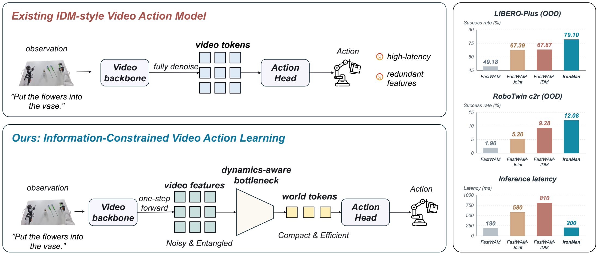
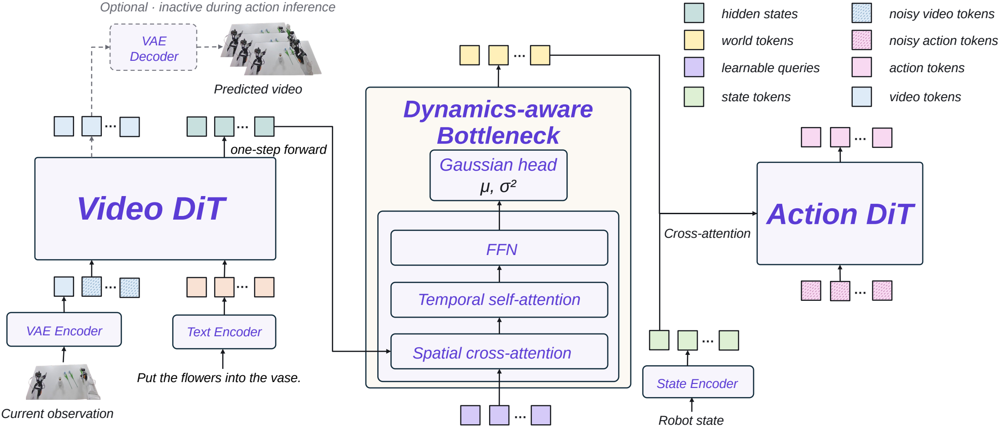
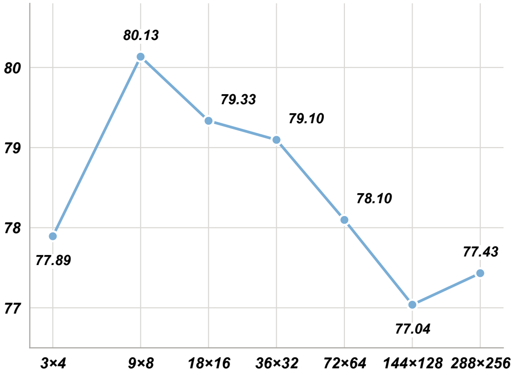
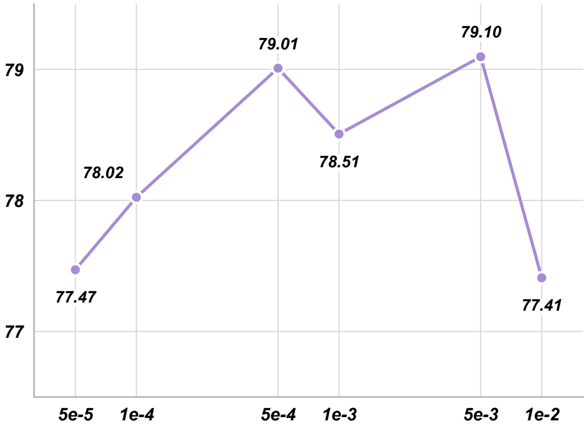
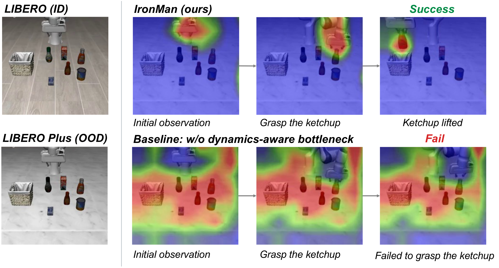
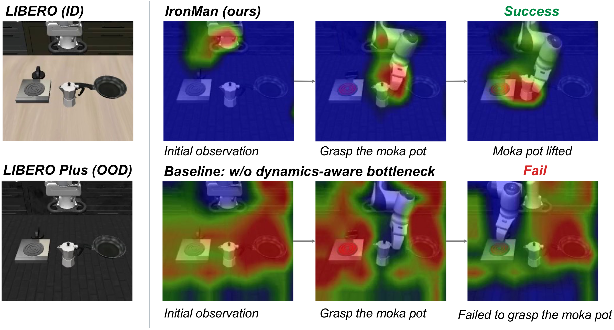
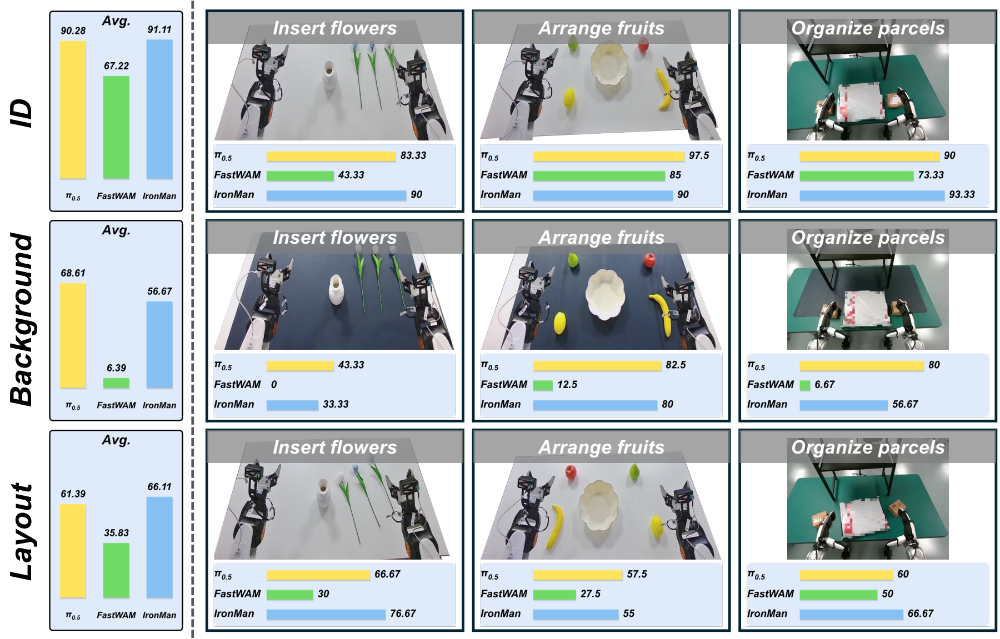

Abstract
Video Action Models (VAMs) couple visual dynamics modeling with action generation for robot manipulation. However, video representations are not naturally suited to action generation, as exposing the action policy to excessive visual detail can impair its generalization ability. Therefore, we introduce IronMan (Information-constRained videO-actioN learning for robot MANipulation), a robust video-action learning framework built on the information bottleneck principle. The core principle of this framework is to impose information constraints that suppress irrelevant visual information while preserving action-relevant dynamics cues. IronMan employs a dynamics-aware bottleneck that distills noisy, entangled one-step video features into compact world representations. Extensive simulation and real-world experiments demonstrate strong in-distribution (ID) performance and out-of-distribution (OOD) robustness while maintaining efficient inference. IronMan achieves success rates of 99.0% on LIBERO and 79.4% on RoboTwin clean2clean, outperforming all the evaluated baselines. Under OOD shifts, IronMan achieves a success rate of 79.1% on LIBERO-Plus, exceeding the strongest baseline by 10.4 percentage points.
01 / The method
A compact interface from video to action.
Existing video–action interfaces allow the action policy to freely attend to irrelevant visual signals, increasing its sensitivity to visual details. IronMan instead uses an information-constrained bottleneck designed to retain the predictive dynamics needed for action while suppressing redundancy.


02 / The evidence
Strong ID performance and OOD robustness.
In-Domain: LIBERO & RoboTwin clean2clean
| Model | Em. PT. | Spatial | Object | Goal | Long | LIBERO Avg. | RoboTwin c2c |
|---|---|---|---|---|---|---|---|
| π0.5 | ✓ | 98.8 | 98.2 | 98.0 | 92.4 | 96.9 | 70.7 |
| X-VLA | ✓ | 98.2 | 98.6 | 97.8 | 97.6 | 98.1 | 68.0 |
| Abot-M0 | ✓ | 98.8 | 99.8 | 99.0 | 96.6 | 98.6 | 57.4 |
| starVLA | ✗ | 98.7 | 99.7 | 98.6 | 94.2 | 97.8 | 46.5 |
| FastWAM | ✗ | 98.2 | 100.0 | 97.0 | 95.2 | 97.6 | 77.8 |
| LingBot-VA | ✓ | 98.5 | 99.6 | 97.2 | 98.5 | 98.5 | – |
| Motus | ✓ | 96.8 | 99.8 | 96.6 | 97.6 | 97.7 | – |
| IronMan (ours) | ✗ | 99.0 | 100.0 | 97.8 | 99.0 | 99.0 | 79.4 |
In-domain success rates (%). Bold = best, underline = second best. Em. PT. denotes embodied pretraining. Without embodied pretraining, IronMan achieves the highest LIBERO average (99.0%) — including 99.0% on long-horizon LIBERO-Long — and 79.4% on RoboTwin clean2clean.
Out-of-Distribution: LIBERO-Plus & RoboTwin clean2random
| Model | Camera | Robot | Language | Light | Background | Noise | Layout | Overall | RoboTwin c2r | Latency (ms) |
|---|---|---|---|---|---|---|---|---|---|---|
| DiT4DiT | 59.7 | 61.1 | 88.4 | 90.8 | 33.7 | 60.0 | 83.6 | 68.7 | – | 180 |
| FastWAM | 16.8 | 43.7 | 68.1 | 77.2 | 51.5 | 36.5 | 59.5 | 49.2 | 1.9 | 190 |
| FastWAM-Joint | 41.3 | 65.5 | 91.0 | 86.4 | 53.8 | 56.2 | 79.2 | 67.4 | 5.2 | 580 |
| FastWAM-IDM | 37.7 | 67.2 | 90.3 | 92.7 | 54.2 | 56.6 | 79.2 | 67.9 | 9.3 | 810 |
| OpenWAM-Joint | 1.2 | 53.4 | 71.1 | 77.3 | 43.8 | 18.4 | 52.2 | 43.7 | 13.2 | 429 |
| IronMan (ours) | 64.4 | 75.9 | 92.7 | 93.4 | 64.4 | 78.3 | 83.7 | 79.1 | 12.1 | 200 |
OOD success rates (%) on LIBERO-Plus (seven perturbation categories) and RoboTwin clean2random, with inference latency measured on an NVIDIA RTX 5090. IronMan ranks first across all seven perturbation categories, surpassing the strongest baseline by 10.4 percentage points overall, with the largest gains on sensor noise (+18.3 pp) and background textures (+10.2 pp) — while keeping latency comparable to the fastest baselines.
Bottleneck analysis & attention visualizations
Bottleneck Mechanism Analysis


Attention Visualization


03 / In the real world
Robustness in the real world
We evaluate IronMan on three real-world tasks across the AGIBOT G2 and ROBOTERA M7 platforms — insert flowers, arrange fruits, and organize parcels — testing spatial perception, fine-grained manipulation, and long-horizon execution. We collect 100 demonstrations per task and evaluate 10 trials per task and setting. Each task is evaluated under three settings: ID (training distribution), Background (strong tabletop texture distractions), and Layout (shifted object positions and orientations).

04 / In simulation
Attention heatmap.
Rollouts under background shifts on LIBERO-Plus. In each video, the left panel shows IronMan and the right panel shows the baseline without the dynamics-aware bottleneck. The attention heatmap video on the right visualizes where each policy attends. These are selected qualitative examples; aggregate results are reported in the section above. After IronMan succeeds, its final frame is held while the baseline continues to its step limit.
“Pick up the ketchup and place it in the basket” (LIBERO-Object, background shift).
“Pick up the alphabet soup and place it in the basket” (LIBERO-Object, background shift).
“Put the yellow and white mug in the microwave and close it” (LIBERO-10, background shift).
“Turn on the stove and put the moka pot on it” (LIBERO-10, background shift).
05 / Reference
Cite this work
If you find IronMan useful for your research, please consider citing our work.
@misc{zhang2026ironman,
title = {IronMan: Information-Constrained Video-Action Learning for Robot Manipulation},
author = {Zhang, Yuanshuo and Zhao, Wenzhe and Lei, Zixing and Chen, Bin and Chen, Siheng},
note = {Preprint},
year = {2026}
}